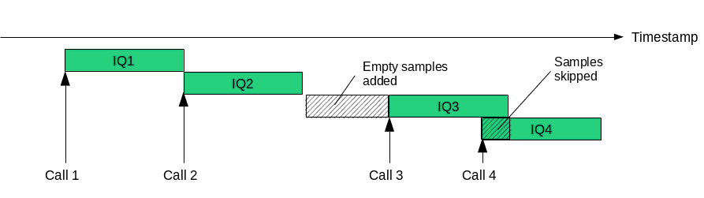

The purpose of this document is to explain how to implement a driver for
Amarisoft software(s) to use any kind of frquency domain radio frontend.
Such a driver must implement the TRX API defined in trx_driver.h and will
be used by Amarisoft software as a shared library.
This API a pure standard C API but may be implemented in any language as long as it
respects ABI.
The shared library will be loaded by Amarisoft software that will control its lifetime.
This implies to run in user mode.
In this document, software will represent Amarisoft Software (Ex: eNB, UE...) and
driver will represent the shared library implementing the TRX API.
Software will first manually open the driver, will load the only
required exported symbol (trx_driver_init) and will call it.
In this phase the driver will provide the various callbacks that the software
will use during runtime.
The function trx_get_param_string and trx_get_param_double may be used
to access fields of rf_driver section of software configuration file.
Any context may be saved inside TRXState->opaque.
After initialization, software may call any of the provided callbacks.
We recommend to also read the commentary associated to each callback in trx_driver.
The minimum set of callbacks to be implemented are:
After initialization has been done, the sofware will require estimating the signal sampling rate
for each RF port.
The sample rate can be either manually set in software config file
(eNB,
UE) or provided by the
driver itself through the trx_get_sample_rate_func callback.
Once initialization is done, software will call trx_start_func2 function to
provide to the driver the configuration of all RF ports.
A RF port defines a signal at a specific frequency and bandwidth with multiple antenna.
Software don’t use any local clock such as the OS clock or any other mechanism.
Its progress is full driven by the reception of IQ samples provided by the driver.
In other words, any computed time inside software will be derived by the amount of
received samples.
This time information is called a timestamp, expressed in samples and can be easily
converted to natural unit (s, ms...) using the sample rate.
<time> = <timestamp> / <sample_rate>
Regularily, the software will call trx_read_func2.
The purpose of this function is to wait for available IQ samples
and provide them to the software with a timestamp.
The timestamp represent the time at which the signal corresponding to
the IQ samples has been received at antenna level.
Its origin can be arbitrary except in case where eNB has to be synchronized with
other base stations, the origin must be Jan 1st 1970 (TAI).
The provided timestamp is the timestamp of the first provided IQ sample.
As the software uses the provided timestamp for its clock, any subsequent call
to this callback should provide IQ samples with a greater timestamp.
If not the IQ samples wil be skipped.
If any discontinuity is found, the missing IQ samples will be generated with an
empty signal.
If no new IQ samples are available since the last call, the function should block until new IQ samples are available.
Regularily, the software will call trx_write_func2.
The purpose of this function is to provide IQ samples to be transmitted to the radio fronted.
The associated timestamp defines when the signal has to be sent and is based on the same timestamp
clock used for reception.
Basically it means that the timestamp should be in the future to let the RF chain some time to send
it.
If it is not the case, it means the software is late and samples should be skipped.
How much in advance the IQ samples are provided depends on many parameters with a optenital
high jitter, which means in practical driver should be able to buffer the IQ sample somewhere.
The call should not block and should be as fast as possible.
Note that to identify RX/TX period for TDD case, the callback will be called with samples
being NULL (The flag TRX_WRITE_FLAG_PADDING will be also set) during RX period.
This information may be used to turn on/off any PA or switch.
Amarisoft IQ are coded with 32 bits float type and have following range:
-1.0 <= IQ <= 1.0
It is up to the driver to normalize IQ and to adapt their level for any AGC or predefined gain.
The type of samples in read and write callbacks are void* but should be casted to TRXComplex format.
It is up to the driver to convert IQ samples from/to this format. Note that this step is crucial for performances and you should have it optimized as much as possible (See Optimizations).
A dummy driver example is implemented in trx_example.c.
trx_example is a dummy transceiver driver for the Amarisoft LTE
eNodeB. It simulates zero samples coming from a source synchronized to
the PC clock and optionally outputs the maximum amplitude of the
downlink I/Q samples.
You can compile the trx_example driver by just typing make.
Then copy trx_example.so to the lteenb installation directory.
You can enable it with the following property in the eNodeB configuration:
rf_driver: {
name: "example",
dump_max: 1, /* enable maximum amplitude output */
},
tx_gain: 0,
rx_gain: 0,
sample_rate: 11.52, /* set the sample rate to 11.52 MHz */
For fast IQ samples convertion, optimized routine are available in convert16_see.c.
This is a example code of fixed point/floating point numbers optimized with SSE instructions. This file must be compiled with "-msse4.1" gcc option.
For more information on Intel SSE/AVX: https://software.intel.com/sites/landingpage/IntrinsicsGuide/
To take advantage of multiple cores CPU architcture, the read and write callbacks have a multi-thread flavour. Each direction may be implemented independently.
If trx_write_mt_func is implemented, the software may call it simultaneously from different thread
so that you need to ensure to avoid any thread race condition.
Functionnaly speaking, this function must do the same as trx_write_func2.
To allow multi-threaded IQ reception, the driver needs to implement the two following callbacks:
trx_read_timestamp_funcWill be called sequentially from the same thread as for trx_read_func2
but does not return any IQ sample, only incremented timestamp will be used.
This means that this function must tell the software up to what timestamp IQ samples
are available.
If this callback is not implemented, the software will use the standard trx_write_func2.
trx_read_mt_funcThis callback is used to retrieve IQ samples at a defined timestamp and be called
simultaneously from multiple threads.
It trx_read_mt_func will be called with timestamp + count always below
the last timestamp provided by trx_read_timestamp_func.
Any IQ samples will never be requested twice or simultaneousl which means that as soon
as they have been provided, they can be discarded.
Part of IQ samples may not be requested (Ex: during TDD TX time or if they are not necessary).
If thoses callbacks are not implemented, the software will use the standard trx_read_func2.
If your system has a NUMA architecture (Multiple socket, NUMA CPU cores) and your driver
is using memory and/or hardware bounded to a NUMA node, the software can take advantage
of it by allocating its memory and processing IQ samples on the same NUMA node.
For instance, if your driver is communicating with a PCIe device, allocating memory and processing
IQ samples on the same NUMA node the PCIe lanes are connected to will reduce the system memory bandwidth
and may drastically improve performances.
To take advantage of it, you need to implement the trx_get_numa_nodes callback
that will be called before trx_start_func2.
To ease troubleshooting, you can access the software log system with trx_log_func
function provided in TRXState during init.
Some helpers are also provided: trx_log_full, trx_log, trx_log1.
The log function is thread safe but if you want to use them from a thread created by the
driver, the thread has to be a POSIX thread and trx_pthread_init/trx_pthread_terminate
must be called at thread creation/termination.
A log may be skipped depending on its level and the current software TRX layer level configuration.
To avoid overhead of log creation in the case where a log would be skipped, the driver may
implement trx_log_set_level_func to be informed of the current configuration (and subsequent
runtime changes) and test level threshold earlier.
Software can get some feedback from the driver to log potential errors/problems on IQ samples
handling.
TRXReadMetadataThis structure is passed to trx_read_func2 and trx_read_mt_func callbacks. The driver
may set the overflow property if TRX_READ_MD_OVERFLOW is set and drivers estimate it has an overflow
in its reception buffer (i.e IQ samples are lost.
TRXWriteMetadataThis structure is passed to trx_write_func2 and trx_write_mt_func callbacks. If
TRX_WRITE_MD_UNDERFLOW is set, the driver may set cur_timestamp_set to 1 and fill cur_timestamp
with the estimated current timestamp at antenna level.
This will inform software if the provided IQ samples are lost (Because timestamp > cur_timestamp)
or not and will also provide information on the remaining time budget.
With this, the software can take decisions to reduce its processing to go faster and will be used
to display stats in the t cpu monitor command (RX/TX diff).
If this is not set, the software will rely on the last timestamp provided by read APIs that may be less
accurate.
Since version 14 of API you can receive and send messages via remote API.
Please refer to the remote API section of your software component for usage.
trx_msg_recv_func can be called from a different thread than read and write functions.
TRXMsg API is thread safe.
All trx messages will be sent to trx_msg_recv_func.
Use TRXMsg->get_double and TRXMsg->get_string API to get data from incoming message.
Use TRXMsg->set_double and TRXMsg->set_string API to set data for response.
Then use TRXMsg->send API when your response is ready to be sent.
If you need to send response later, use TRXMsg->set_timeout API, then
call TRXMsg->send API when your response is ready to be sent.
The timeout_cb will be called when timeout occurs.
You need to call TRXMsg->send to free resources.
Those APIs are thread safe but if you want to use them from a thread created by the
driver, the thread has to be a POSIX thread and trx_pthread_init/trx_pthread_terminate
must be called at thread creation/termination.
To send a message, call trx_msg_send_func.
This will create a message that you can populate with
TRXMsg->set_double and TRXMsg->set_string API.
Then call TRXMsg->send API to send your message.
The message type will be trx and the client must register
to this type of message to receive it.
rx_timestamp_offset to cell info
pattern2 to cell info
trx_example is copyright (C) 2012-2024 Amarisoft. Its redistribution
without authorization is prohibited.
trx_example is available without any express or implied warranty. In
no event will Amarisoft be held liable for any damages arising from
the use of this software.
For more information on licensing, please refer to license.pdf file.